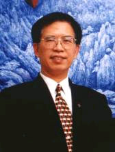
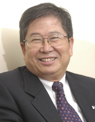
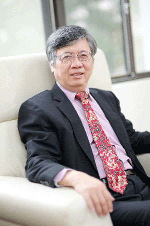

【學校歷史】
輔仁大學創校於民國十四年（1925年），在臺復校於民國五十年（1961年）【今年（2021）校慶為輔仁大學創校96週年及在臺復校60週年】。自准復校迄110學年度，計有12個學院及進修部：51個日間學士班、49個碩士班、23個碩士在職專班、12個博士班、18個進修學士班及1個二年制在職專班。專任教師近724人及專任職工457人(約聘122人)。在校學生近2萬5千人；校友人數：北平時期校友逾1萬2千人，在臺復校以來畢業校友近23萬人。
【校訓】
1.大陸時期--「以文會友，以友輔仁」
輔仁大學的命名有別於一般大學，取自於《論語－顏淵篇》，曾子說：「君子以文會友，以友輔仁」中的「輔仁」二字，其意義即是要我們藉著學問，集合志同的朋友，共同發揮仁道的精神。
「仁」一直是我國幾千年來孔孟中心思想，仁者愛人，仁就是愛，而在基督國度裡也一直是以愛世人為出發點，所以「輔仁」二字能彰顯本校教育的精神。因此民國16年，便正式定名輔仁大學，並將「以文會友，以友輔仁」作為校訓。
2.臺灣時期--「真、善、美、聖」
輔仁校訓「真、善、美、聖」乃結合中西文化精華而成。于校長將之系統整理，以為同學參考和依據。「真」是追求真理，明辨是非。為人應坦承真理，要有為真理作證或犧牲性命的精神，此為做人的基本原則。「善」是實踐道德。中國教育特別注重道德教育，沒有了道德，其他一切都沒有價值。「美」是培育美感。在士林哲學中認為美是真善的光輝，是最高峰的美。「聖」是最高的真善美。是一種超凡入聖的人生觀，也是所謂天人合一的最高理想。
文字和圖片擷取自輔仁大學校史室
近20年校長

李寧遠 教授 (2000.02 - 2004.01)

黎建球 教授 (2004.02 - 2012.01)

江漢聲 教授 (2012.02 - 迄今)